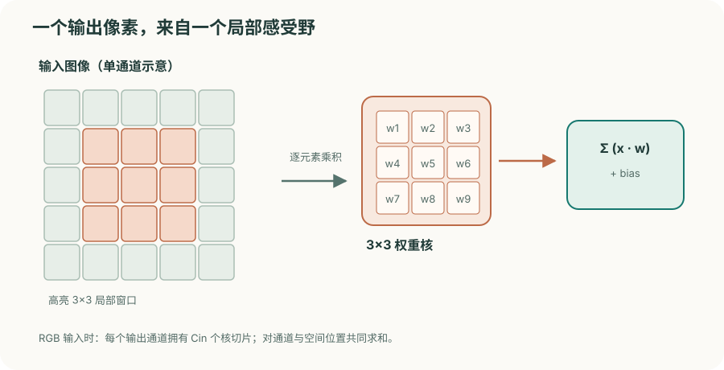
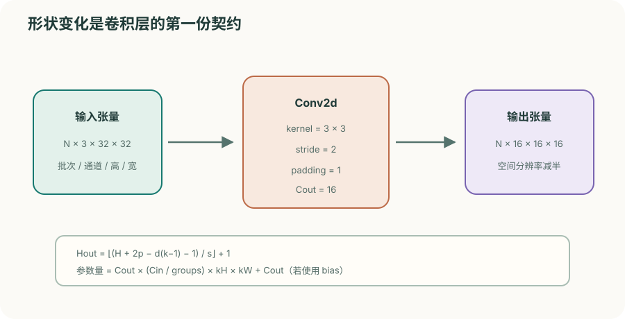
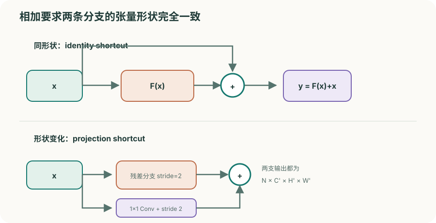
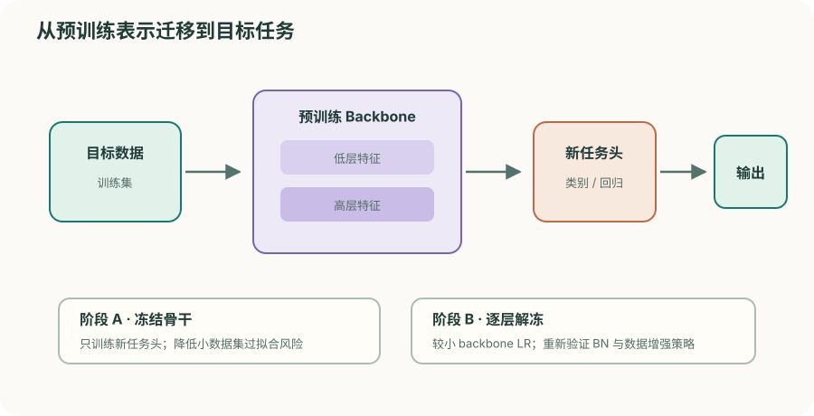

卷积神经网络：局部连接、共享权重与残差学习
图像不是一串互不相关的像素。卷积用局部感受野和共享权重提取空间模式，残差连接改善深层网络的优化，而迁移学习与数据增强把预训练表示带入具体视觉任务。
01 · 全连接层为什么浪费图像结构
一张 224×224 的 RGB 图像有 150,528 个输入数值。若第一层直接连接到 1,000 个神经元，仅权重就需要 150,528,000 个参数（还未计偏置）。更重要的是，展平后相邻像素不再以二维邻域的形式出现：模型必须从数据中重新学习“附近像素常常共同构成边缘”这样的规律。
卷积层施加两个归纳偏置：局部连接让一个输出位置只读取输入的局部窗口；权重共享让同一个滤波器在不同位置重复使用。它们大幅减少参数，并让同一种局部模式可以在图像不同位置被识别。严格说，卷积层对平移具有一定的等变性，不是天然的平移不变性；边界填充、步长、下采样和后续结构都会影响这一性质。

02 · 卷积算子、输出尺寸与参数量
深度学习框架中的 Conv2d 通常实现的是互相关：卷积核按存储方向滑动，不先旋转 180°。由于核权重是可学习的，实践中仍沿用“卷积”这一名称。输入常用 NCHW 布局：批次 N、通道 C、空间高度 H 和宽度 W。
给定核大小 k、步长 s、填充 p、膨胀率 d，单个空间维度的输出长度为：
若 groups=1 且使用偏置，参数量为 Cout × Cin × kh × kw + Cout。分组卷积把输入通道分组，深度卷积是每个输入通道独立卷积的一种特殊情况。下面用 PyTorch 验证输出形状和参数计数，而不是只凭图猜测。

import torch
from torch import nn
x = torch.randn(2, 3, 32, 32)
conv = nn.Conv2d(3, 16, kernel_size=3, stride=2, padding=1)
y = conv(x)
expected = 16 * 3 * 3 * 3 + 16
assert tuple(y.shape) == (2, 16, 16, 16)
assert sum(p.numel() for p in conv.parameters()) == expected
print("output:", tuple(y.shape), "parameters:", expected)03 · 池化、步长与感受野
池化（如 MaxPool）在局部窗口中取最大值或平均值；步长卷积则通过可学习滤波器完成下采样。二者都可能缩小特征图，但归纳偏置不同。池化并不自动保证“平移不变”：微小位移可能改变窗口边界和最大值位置；抗混叠下采样、数据增强和架构设计都可能影响稳定性。
随着卷积层堆叠，单个深层特征能依赖的输入区域逐渐变大。令 j 为相邻特征点在原图中的间距、r 为感受野宽度，则一维情况下：
全局平均池化把每个通道的空间特征压成一个数，常用于分类头；但对定位任务，过早丢弃空间分辨率可能不合适。架构选择应由任务输出决定，而不是把池化视为必经步骤。
04 · ResNet：残差分支与捷径相加
当网络加深时，准确率饱和甚至退化，并不总是过拟合。ResNet 原论文指出，普通深层网络可能连训练误差都更高，说明优化器难以找到更深网络中的简单解。残差块把目标函数写成 H(x)=F(x)+x：若恒等映射已经足够，残差分支只需学习接近零的修正。
逐元素相加要求两支形状相同。若通道数或空间分辨率变化，需要投影捷径（常用 1×1 卷积及步长）把输入映射到残差分支的输出形状。ResNet-50/101/152 常用 1×1、3×3、1×1 的 bottleneck 结构；这与两层 BasicBlock 不是同一结构。

import torch
from torch import nn
class BasicBlock(nn.Module):
def __init__(self, in_channels, out_channels, stride=1):
super().__init__()
self.conv1 = nn.Conv2d(in_channels, out_channels, 3, stride, 1, bias=False)
self.bn1 = nn.BatchNorm2d(out_channels)
self.conv2 = nn.Conv2d(out_channels, out_channels, 3, 1, 1, bias=False)
self.bn2 = nn.BatchNorm2d(out_channels)
self.relu = nn.ReLU()
self.shortcut = nn.Identity() if stride == 1 and in_channels == out_channels else nn.Sequential(
nn.Conv2d(in_channels, out_channels, 1, stride, bias=False),
nn.BatchNorm2d(out_channels),
)
def forward(self, x):
residual = self.shortcut(x)
y = self.relu(self.bn1(self.conv1(x)))
y = self.bn2(self.conv2(y))
return self.relu(y + residual)
x = torch.randn(2, 64, 32, 32, requires_grad=True)
block = BasicBlock(64, 128, stride=2)
y = block(x)
assert tuple(y.shape) == (2, 128, 16, 16)
y.mean().backward()
assert x.grad is not None and torch.isfinite(x.grad).all()
print("residual output:", tuple(y.shape))05 · 架构演化：从 LeNet 到现代骨干
经典视觉架构的变化不是一条简单的“层数越多越好”曲线，而是在计算预算、感受野、优化难度和硬件利用率之间寻找结构。
| 架构 | 关键结构 | 理解重点 |
|---|---|---|
| LeNet-5 | 卷积、池化、全连接 | 早期小图像识别范式 |
| AlexNet | 更深卷积网络、ReLU、GPU 训练 | 大规模视觉数据与算力结合 |
| VGG | 重复堆叠 3×3 卷积 | 结构规整，但参数和计算成本较高 |
| Inception | 多尺度并行分支 | 不同感受野并行提取特征 |
| ResNet | 残差捷径 | 改善深层网络优化 |
| EfficientNet | 深度、宽度、分辨率联合缩放 | 计算预算与模型规模协同设计 |
ResNet 原论文报告了 152 层网络，并报告集成模型在 ImageNet 测试集上的 3.57% top-5 error；这不是任意 ResNet 单模型的通用准确率。当前 TorchVision 的 ResNet-50 实现采用 ResNet V1.5 变体：bottleneck 下采样 stride 放在 3×3 卷积，而原论文把 stride 放在第一个 1×1 卷积；比较代码与论文结构时必须说明这个实现差异。TorchVision 的 IMAGENET1K_V2 权重采用后续训练配方，其官方推理预处理先 resize 到 232，再 center crop 到 224。使用预训练权重时应直接调用该权重对象的 transforms()，不要手写一个“看起来差不多”的归一化流程。
06 · 迁移学习：冻结、微调与预处理
迁移学习不是“加载权重后只训练最后一层”这一条固定规则。常见流程是先冻结骨干、训练任务头，再按数据规模与域差异逐步解冻高层。微调时常为预训练骨干设置更小学习率；若冻结骨干参数，还要决定 BatchNorm 是否继续更新 running statistics。验证集必须代表目标部署分布，且预处理要与所选权重匹配。

import torch
from torch import nn
backbone = nn.Sequential(nn.Linear(32, 64), nn.ReLU(), nn.Linear(64, 16))
for parameter in backbone.parameters():
parameter.requires_grad = False
head = nn.Linear(16, 3)
optimizer = torch.optim.Adam(head.parameters(), lr=1e-3)
features = backbone(torch.randn(8, 32))
logits = head(features)
labels = torch.randint(0, 3, (8,))
loss = nn.CrossEntropyLoss()(logits, labels)
optimizer.zero_grad()
loss.backward()
optimizer.step()
assert all(p.grad is None for p in backbone.parameters())
assert any(p.grad is not None for p in head.parameters())
print("frozen backbone; trainable task head")07 · 数据增强：先问变换是否保留标签
数据增强通过对训练样本施加随机变换，扩大模型看到的输入变化范围。裁剪、翻转、旋转、颜色扰动并非对所有任务都有效：左右翻转可能改变文字、医学影像方向或道路标志含义；垂直翻转可能使自然图像变得不合理。增强策略必须尊重标签语义和采集过程。
训练集可使用随机增强；验证和测试通常使用确定性预处理。若增强涉及 MixUp/CutMix 等跨样本标签组合，标签也必须按定义同步变换。增强不会创造新的独立受试者或独立场景，不能代替合理的数据划分。
import torch
import torch.nn.functional as F
# 两张单通道图像，形状 [N, C, H, W]
images = torch.arange(2 * 1 * 3 * 4).reshape(2, 1, 3, 4).float()
flipped = torch.flip(images, dims=[-1])
restored = torch.flip(flipped, dims=[-1])
assert torch.equal(restored, images)
resized = F.interpolate(flipped, size=(6, 8), mode="bilinear", align_corners=False)
assert tuple(resized.shape) == (2, 1, 6, 8)
print("flip and resize shapes:", tuple(flipped.shape), tuple(resized.shape))08 · 视觉模型的诊断清单
- 数据：训练/验证/测试按患者、视频、设备或地理实体分组，避免近重复图像跨集合。
- 尺寸：记录输入分辨率、裁剪策略、通道顺序、归一化参数和插值方式。
- 架构：核对卷积输出尺寸、残差相加形状、stride 放置位置和预训练模型版本。
- 训练：记录冻结层、BatchNorm 模式、优化器参数组、学习率和增强策略。
- 评估：按部署场景报告每类指标、校准、鲁棒性和失败样本；不要只看总体准确率。
卷积网络的强项来自对局部结构的偏置，而不是“看见图像”的魔法。输入尺度、采集分布、任务标签和推理约束仍然决定它是否可靠。
来源、实现版本与适用边界
下列论文用于核对算法定义与历史主张；API 文档用于核对当前软件行为。图中的张量和数值若未明确引用论文实验，均为构造的教学示例，不代表 benchmark 或生产效果。
- He et al. (2015), Deep Residual Learning for Image Recognition
- PyTorch Conv2d：形状、stride、padding、dilation 与 groups
- TorchVision 模型权重与预处理 transforms
- TorchVision ResNet-50：权重版本、预处理与 ResNet V1.5 实现说明
- Simonyan & Zisserman (2014), Very Deep Convolutional Networks for Large-Scale Image Recognition
- Tan & Le (2019), EfficientNet: Rethinking Model Scaling for Convolutional Neural Networks